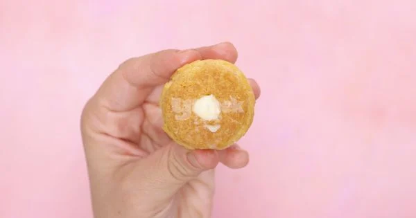
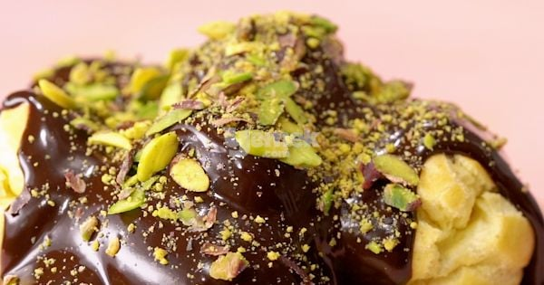

Profiterol Tarifi Nasıl Yapılır?
1. Kremasını hazırlamak için; bir sos tenceresine süt, toz şeker, un ve yumurtayı ekleyip orta ateşte koyu bir kıvam alana kadar sürekli olarak karıştırın.
2. Koyulaşan kremaya vanilin ilave edip karıştırın, ocaktan alın ve oda sıcaklığına geldikten sonra sıkma poşetine doldurup, en az 1 saat buzdolabında bekletin.
3. Profiterol hamuru için; öncelikle fırını 180 dereceye ayarlayın. Derin bir sos tenceresine su ve margarini alıp karıştırarak kaynatın.
4. Üzerine unu ekleyip sürekli olarak karıştırarak dibine hamur yapışmaya başlayana kadar, yaklaşık 4-5 dakika pişirin. Dibi yapışmaya başlayan hamuru bir kaseye alın ve 15 dakika oda sıcaklığında soğutun.
5. Soğumuş olan hamurun üzerine her bir yumurtayı teker teker ekleyin ve her seferinde yumurtaları güzelce yedirerek yapışkan bir hamur elde edin. Bu hamuru varsa sıkma poşetine alın, daha kolay şekil vermek için yaklaşık 15 dakika daha dinlendirin.
6. Bekleyen hamurdan pişirme kağıdı serili fırın tepsisine aralarında biraz boşluk olacak şekilde ceviz büyüklüğünde toplar sıkın ya da kaşık yardımıyla dökün. Parmağınızın ucunu ıslatıp hamurların üzerindeki çıkıntıları düzeltin ve fırına alıp, piştiği süre boyunca kapağını hiç açmadan; yaklaşık 40 dakika pişirin.

7. Pişen profiteroller oda sıcaklığına geldikten sonra alt kısmından bıçakla delik açın ve hazırladığınız kremayı içine sıkın. Bunun yerine arasını kesip krema da doldurabilirsiniz.
8. Çikolata sosu için; küçük parçalara ayırdığınız bitter çikolatayı benmari usulü eritin. Üzerine krema ilave edip güzelce karıştırın. Hazırladığınız çikolata sosunu profiterollerin üzerine dökün.
9. Son olarak file Antep fıstığı gezdirip servis edin. Afiyet olsun!
